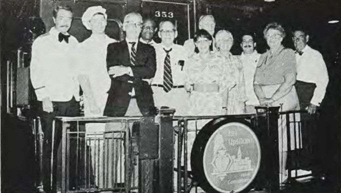
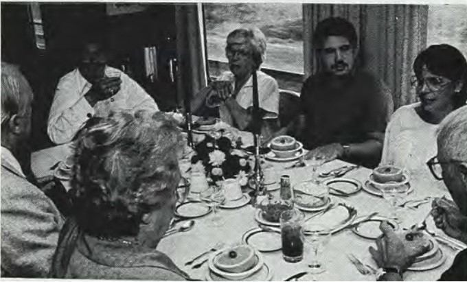
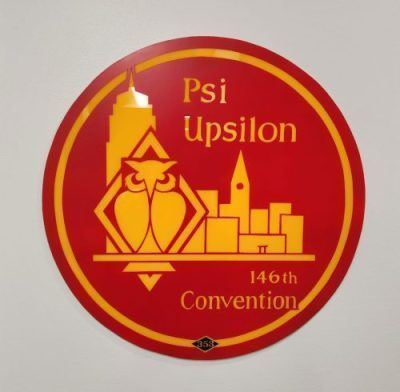

From the Archives · 1916
"All Aboard for the Psi Upsilon Special"

Reprinted from an article in the August 1989 Diamond, by Tip Hinsdale, Xi '39.
The eight of us were waiting patiently, looking at the empty track at Grand Central Terminal's Gate 18 in New York City. Then, slowly, the "Lake Shore Limited" backed in to load up for its journey to Chicago. As the rear of the train approached, it was as if we were in another era: the era of luxury railroad travel, which ended decades ago. Attached to this Amtrak train was a gleaming beauty of a railroad car: Lehigh Black Diamond Limited's "353." The observation platform at the rear of the car carried a traditional lit drumhead telling one and all that this car was headed off to Chicago and the 146th Psi Upsilon Convention.
The "353" was built for the now-defunct Lehigh Valley Railroad in 1916 and served as a "mansion on rails" for railroad executives and financiers until its retirement after sixty years of use. The car was purchased a few years ago, and lovingly restored by Richard A. Horstmann, Pi '57. Dick, who is the Chairman of Psi Upsilon's Alumni Advisory Board, and a member of the Executive Council, frequently charters the car for trips all around the United States. We were particularly privileged to have him serve as our host for this very special trip.
It was a lifetime dream of Dick's to have such a car, and his love for rail travel is apparent when you see him on board the "353."

There were eight of us fortunate enough to hold reservations for this splendid expedition: Donald S. Smith, Xi '39 and his wife Lois, Andrew M. Kerstein, Delta '76 and his wife Debbie, Carl A. Beck, Delta '41 and his wife Florence, William R. Robie, Epsilon Omega '66, President of the Executive Council, and yours truly Robert W. "Tip" Hinsdale, Xi '39.
The passengers on the observation platform of the "353" are Donald G. Piper, Pi '57, Jonathan C. Piper, Pi '87, Richard A. Horstmann, Pi '57, Jesse Mitchell, Robert W. Hinsdale, Xi '39, Deborah Kerstein, Donald S. Smith, Jr., Xi '39, Florence Beck, Andrew M. Kerstein, Delta '76, Lois Smith, and Carl A. Beck, Delta '41
As we entered the car to begin our journey, we marveled at the gleaming brass and polished wood of the lounge, the compact efficiency of the private staterooms, and the splendor of the dining room, each wonderfully appointed to reflect a bygone era. Fresh flowers adorned the lounge as we sat leisurely sipping drinks and nibbling on hors d'oeuvres, awaiting our departure. It was dark as we cleared Grand Central, but we could see the lights of West Point as we journeyed north along the Hudson Valley.

We sat down to dinner in the dining room, starting with a shrimp cocktail and followed with prime rib. Of course each of our meals was launched with the Psi Upsilon Doxology. The chef for our trip was Jonathan Piper, Pi '87 and one of our stewards was his father, Donald G. Piper, Pi '57, who was also the official photographer for the Convention. Our lead steward was Mr. Jesse Mitchell, well into his 80's, a retired railroad steward. Jesse served as a true sentimental link to the heyday of railroad travel.
As we continued west through New York State, we sat in the rear observation lounge watching stations pass by, crossing lights flash with the ding, DING, DING, ding of the bells. We listened to the railroad radio as it contacted the train every 100 miles or so to report nothing trailing beneath the cars. Our speed reached as high as 100 M.P.H. on several occasions. By the time we departed Rochester, New York everyone was settled into their berths and sleeping contently.
We awoke to the wonderful smell of breakfast cooking in the kitchen. The "353" journeyed through Cleveland and Toledo, Ohio, South Bend, Indiana and miles of soybean and cornfields. The steel mills of Gary, Indiana were hardly out of sight when we could see Chicago. We soon pulled into the "Windy City's" Union Station; the concluding point of our westward trip.

The guests enjoying one of the fine meals
After a banner Convention experience, we arrived back at Union Station to find the Lehigh Valley "353" at the rear of the "Broadway Limited," the fabled Chicago - New York train of the old Pennsylvania Rail Road and still running for Amtrak. It was dark as we left Chicago, but we would be paid back with the daylight views the next day. Dinner was served by the time we hit Fort Wayne, Indiana, and we journeyed east into the night.
By daylight we were in Pittsburgh. The "353" soon started to climb the Appalachian Heights to the mini continental divide. The eastern descent through breathless valleys and gorges, was magnificent. At last we came to the famous Horse Shoe curve where the rails do more than a 180 degree turn in breathless scenery and you can count every car of the train as it curves ahead of you. Through Johnstown, Pennsylvania, scene of the famous 19th century flood, we finally came to Paoli, (how could a Psi U journey not pass through Paoli?) where Henry Poor, Gamma '39 and his wife Mary were waving from the platform.
The Drumhead of "353" on display at the International Office of Psi Upsilon today.
We soon came to Philadelphia where we left the "353" behind and our group continued on to New York. Such a convivial group we were, much picture taking and a lot of serious discussion of where our great fraternity is heading. Each of us are indebted to Dick Horstmann for providing us with the opportunity to make this wonderful trip. The Psi Upsilon Special was indeed a special trip for us all.
You can read more about the Black Diamond, which is now in Steamtown, a National Historic Site in Scranton, PA here: https://www.nps.gov/stea/planyourvisit/lv353.htm
You can read this story, and much more, in the 2023 Edition of Reflections Magazine!